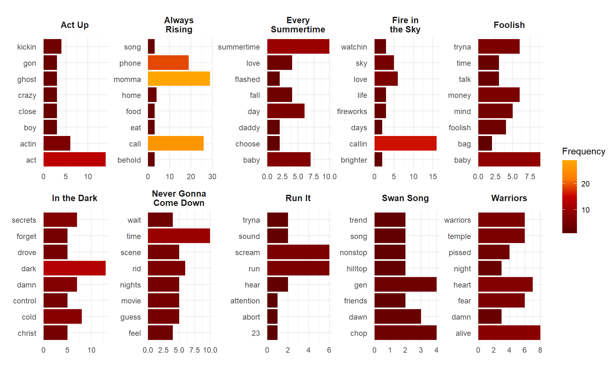

In this project, I explored songs from the Shang-Chi album by looking at word frequencies and conducted sentiment analysis using AFINN and NRC lexicons.
knitr::opts_chunk$set(echo = TRUE, warning = FALSE, message = FALSE,
fig.align = "center")
#Attach libraries
library(tidyverse)
library(here)
library(readxl)
library(kableExtra)
#For figures
library(patchwork)
library(paletteer)
#For text and sentiment analysis
library(tidytext)
library(textdata)
library(ggwordcloud)
#For moving average
library(zoo)
In this project, I explored and analyzed text data from songs in the Shang-Chi and the Legend of the Ten Rings: The Album official motion picture soundtrack. Lyrics for each song was tokenized to explore the most common words by each song and across all songs. Sentiment analysis was conducted to explore the valence and emotional ratings of words appearing in each song.
Figure 1. Album cover for Shang-Chi and the Legend of the Ten Rings: The Album. Data source: Marvel (2021).
The movie Shang-Chi and the Legend of the Ten Rings (Shang-Chi for short) is the first Marvel Comics superhero film that featured a main Asian superhero character and a majority Asian cast. The soundtrack Shang-Chi and the Legend of the Ten Rings: The Album was executively produced by 88rising, a prominent Asian owned record label and production company that celebrates the talent of Asian music artists. 88rising (88 symbolizing double happiness in Chinese) is also known as the Disney of Asian hip-hop (Wikipedia, 2022). I loved watching Shang-Chi and the soundtrack was a masterpiece with a flawless selection of artists who created amazing beats that resonated with and were based on the films tones and themes of home, family, love, and the Asian-American identity (Marvel, 2021).
The creative process was really inspiring, thus I wanted to do a text and sentiment analysis on a selection of songs from the soundtrack. I highly recommend you listen to the album as you read through this project!
The soundtrack was executively produced by 88rising and released by Marvel Music/Hollywood Records and Interscope Records for the Shang-Chi motion picture soundtrack on September 3, 2021 (Marvel, 2021). I chose songs that were sung predominantly in English (e.g., no entire verses in Mandarin) in order to perform the text analyses (which is why Lazy Susan was cut from the list), and selected the remaining songs that I considered as my top 10 favorites. Lyrics were taken from LyricFind, Musixmatch, and Genius when queried in the Google search engine.
Exploratory text analysis was performed by wrangling the data and tokenizing the lyrics into individual words. Stop words were filtered out to retain more functionally meaningful words for analysis. The top eight words by each song were plotted and the top 100 words overall across the songs were visualized in a word cloud. Sentiment analysis was done to assess valence and emotional ratings for words within each song using the NRC and AFINN lexicons. Additionally, a sentiment trajectory was plotted using calculations from a moving average of AFINN scores for words throughout the entire album. All analyses were conducted in R version 4.1.1 and RStudio version 1.4.1717.
The below table (Table 1) shows the top 10 songs selected for this text analysis.
#Read in the data
shangchi <- read_xlsx(here("data", "shangchi_ost.xlsx"))
#Show top 10 fave songs
shangchi %>%
#Filter out other tracks
filter(!is.na(song_number)) %>%
#Remove variables for table
select(track_number, song_name, artist_name) %>%
#Rename columns
kable(col.names = c("Track Number", "Song Name", "Artist Names"),
#Change alignment
align = c("c", "l", "l"),
#Add caption
caption = "Track number, song name, and artist names are
displayed for the top 10 favorite
songs from <i>Shang-Chi and the Legend of the Ten
Rings: The Album</i>. Data source: Marvel (2021).",
#Change width of table
table.attr = "style='width:80%;'") %>%
#Make table striped and hover
kable_styling(bootstrap_options = c("hover", "striped"),
#Center table
position = "center")
| Track Number | Song Name | Artist Names |
|---|---|---|
| 1 | Always Rising | NIKI, Rich Brian, Warren Hue |
| 3 | In the Dark | Swae Lee, Jhen Aiko |
| 6 | Fire in the Sky | Anderson .Paak |
| 8 | Every Summertime | NIKI |
| 9 | Never Gonna Come Down | Mark Tuan, BIBI |
| 10 | Foolish | Rich Brian, Warren Hue, Guapdad 4000 |
| 12 | Act Up | Rich Brian, EARTHGANG |
| 14 | Run It | DJ Snake, Rick Ross, Rich Brian |
| 15 | Swan Song | Saweetie, NIKI |
| 18 | Warriors | Warren Hue, Seori |
I explored the top eight most common words from each song. To do this, I converted the lyrics into all lowercase words, then tokenized them into individual words per row. After removing common stop words and checking the subset dataframe, I noticed that there were some other words that, while often used in rap, hip-hop, and R&B music, should be removed because they dont provide any functional meaning to the lyrics. These are words that are dropped from the lyrics such as yeah and ay. The words are then plotted as column or bar graphs for each song.
#Tokenize lyrics into words
shangchi_words <- shangchi %>%
#Filter out other tracks
filter(!is.na(song_number)) %>%
#Change string in `lyrics` to all lowercase
mutate(lyrics = str_to_lower(lyrics)) %>%
#Remove excess leading and trailing white space from `lyrics`
mutate(lyrics = str_trim(lyrics)) %>%
#Tokenize by words, drops punctuation
#Creates new column called `word` which tokenizes `lyrics` by words
unnest_tokens(word, lyrics, token = "words") %>%
#Remove stop words
anti_join(stop_words)
#Word count of songs
shangchi_wordcount <- shangchi_words %>%
#Count words by song
count(song_name, word)
#Add more stop words to remove
my_stopwords <- tibble(word = c("yeah", "ay", "ayy", "ba", "brr", "dadum",
"di", "da", "boom", "em", "uh", "huh",
"ah", "ooh", "hm", "woah"))
#Further remove my stop words
shangchi_words <- shangchi_words %>%
anti_join(my_stopwords)
#Recount words
shangchi_wordcount <- shangchi_words %>%
count(song_name, word)
#Top 8 words by song
shangchi_top8_words <- shangchi_wordcount %>%
#Group by song name
group_by(song_name) %>%
#Descending order of number/count
arrange(-n) %>%
#Top 8
slice(1:8) %>%
#Add space after longer song titles
mutate(song_name = recode(song_name,
"Always Rising" = "Always\nRising",
"Every Summertime" = "Every\nSummertime",
"Fire in the Sky" = "Fire in\nthe Sky",
"Never Gonna Come Down" = "Never Gonna\nCome Down"))
#Plot top 8 words by song name
ggplot(data = shangchi_top8_words,
aes(x = n, y = word, fill = n)) +
#Define bar plot
geom_col() +
#Facet by song name, keep rows to 2
#Scale based on own song
facet_wrap(~ song_name, nrow = 2,
scales = "free") +
#Change color
scale_fill_paletteer_c(palette = "gameofthrones::lannister") +
#Chnage labels
labs(fill = "Frequency") +
#Change theme
theme_minimal() +
#Allow objects outside plot area to be within margin
coord_cartesian(clip = 'off') +
#Add custom theme
#Change facet label font size and make bold
theme(strip.text = element_text(face = "bold",
size = 10),
#Change size and angle of x-axis text
axis.text = element_text(size = 9),
#Change legend position
legend.position = c(1.08, 0.5),
#Change plot margins
#Top, right, bottom, left
plot.margin = margin(0.5, 2.8, 0.5, 0.5, "cm"),
#Remove axes labels
axis.title = element_blank())

Figure 2. Top eight most common or frequently used words in the lyrics for each song. Data source: LyricFind, Musixmatch, & Genius.
NIKI said that she was given a brief to write a song for Shang-Chi to tell the love story between Shang-Chis parents (YouTube, 2022), so she wrote Every Summertime to encapsulate two Asian-American lovers falling in love during the summer in the 80s in San Francisco. The word summertime represents youth and feeling carefree, and fall (in) love is a no-brainer.
Swan Song was played at the end of the film when the character Xialing takes command over her fathers empire, which she transforms by allowing men and women to be treated equally. This song uses the phrase out with the old, in with the new. Given Xialings grind and hustle to lead the new generation of warriors, words like trend, nonstop, and dawn within the lyrics are fitting.
Many of the other songs show that the most frequent words seem to be aligned with the story of what the song conveys, and ties back to the themes of family, love, conflict, and identity.
In addition to finding the most frequent words within each song, I also wanted to find the top 100 frequent words across all songs.
#Top 100 words, no duplicates
shangchi_top100_words <- shangchi_wordcount %>%
#Descending order of number/count
arrange(-n) %>%
#Top 100
slice(1:100)
#Plot wordcloud
ggplot(data = shangchi_top100_words,
aes(label = word)) +
#Define word cloud
#Color and size changes based on n
geom_text_wordcloud(aes(color = n, size = n),
#Change cloud based on shape
shape = "diamond",
#Set seed
seed = TRUE) +
#Make scale for color
scale_color_gradientn(colors = c("darkorange", "darkmagenta", "firebrick", "#593d9cff")) +
#Scale size
scale_size_area(max_size = 18) +
#Change theme
theme_minimal()
Figure 3. Word cloud for the top 100 most frequent words across all songs. Gradient of colors (orange to purple) and size (small to large) represent how commonly used the word is across all 10 songs. Data source: LyricFind, Musixmatch, & Genius.
The word cloud shows that the most common word is momma and call, from the first track in the album named Always Rising. This occurs the most often because these words were used in the chorus. In Asian cultures, verbal affection (words of affirmation) is foreign and parents rarely, if ever, say I love you. Instead, love is shown through actions and acts of service. One of the most common ways Asian parents tell their children they love them is by asking them if theyve eaten yet, usually mentioned in phone calls with their children or when their children come home to visit them. The part of the verse by Warren Hue that goes Momma call my celly, Food gettin cold symbolizes the love that Asian parents have for their children by cooking meals, but also brings up another quip about Asian-American culture that parents prefer their children to come home and not be out all the time. Hence, the lyric means I made you food, so come home before the food gets cold. Overall, the lyrics highlight the combination of themes of family, perseverance, and the Asian-American experience (Envimedia, 2021).
Other noticeable words like warriors, alive, secrets, heart also help compile the narrative of Shang-Chi.
Words can be associated with an emotional weight, and can also have either a positive or negative association. The two lexicons I will use to evaluate the 10 songs are:
NRC Emotion Lexicon: created by Saif Mohammad and Peter Turney, in which words are ranked by sentiments (positive and negative), and also associated with one of eight emotions including fear, anger, trust, sadness, disgust, anticipation, joy, and surprise (Mohammad & Turney, 2013)
AFINN Lexicon: created by Finn rup Nielsen, in which words are ranked for valence from an integer scale of -5 (most negative sentiment) to +5 (most positive sentiment) (Nielsen, 2011)
#First, bind words in `shangchi_words` to `nrc` lexicon:
shangchi_nrc <- shangchi_words %>%
#Keep instance of first df that match 2nd df
#Keep rows that match between the two
#AFINN score in `value` column
inner_join(get_sentiments("nrc"), by = "word")
#Count words by sentiment group
shangchi_nrc_count <- shangchi_nrc %>%
#Count sentiment words by song name
count(song_name, sentiment, sort = TRUE) %>%
#Add space after longer song titles
mutate(song_name = recode(song_name,
"Always Rising" = "Always\nRising",
"Every Summertime" = "Every\nSummertime",
"Fire in the Sky" = "Fire in\nthe Sky",
"Never Gonna Come Down" = "Never Gonna\nCome Down"))
#Plot frequency of sentiment words
ggplot(data = shangchi_nrc_count,
aes(x = n, y = sentiment, fill = n)) +
#Define bar plot
geom_col() +
#Facet by song name, keep rows to 2
#Scale based on own song
facet_wrap(~ song_name, nrow = 2,
scales = "free") +
#Change color
scale_fill_paletteer_c(palette = "grDevices::Red-Yellow") +
#Change labels
labs(fill = "Frequency") +
#Change theme
theme_minimal() +
#Add custom theme
#Change facet label font size and make bold
theme(strip.text = element_text(face = "bold",
size = 10),
#Change size of axis text
axis.text = element_text(size = 9),
#Remove axes labels
axis.title = element_blank(),
#Change legend position
legend.position = c(1.08, 0.5),
#Change plot margins
#Top, right, bottom, left
plot.margin = margin(0.5, 2.8, 0.5, 0.5, "cm"))
Figure 4. Valence and emotional rating for lyrics in each song using NRC lexicon. Data source: LyricFind, Musixmatch, & Genius.
Surprisingly, Foolish contained the most positive words, even more than Fire in the Sky and Every Summertime which are the two well known, good vibes-esque, falling-in-love songs. The song Foolish is a haughty anthem, calling out those who are all talk, such as being flashy and highly exuberant (Envimedia, 2021). Perhaps NRC lexicon categorized these adjectives and nouns as being positive without consideration of the context in which these words are being used.
The songs Warriors and Never Gonna Come Down had the most words grouped into emotions for anticipation and anger. However, Warriors also contained the most words associated with trust. Warriors lyrics describe the story and expectations of growing up Asian-American and trying to find ones identity without conforming to stereotypical molds (Envimedia, 2021). Never Gonna Come Down sings about the frustrations of love, and likely where the words associated with anticipation come in.
In the Dark contained the most words associated with the sadness and negative emotions, as the song lyrics describe a relationship where a partner feels abandoned and feeling like they deserve more. This song can resonate with Shang-Chi as a child whose mother passed when he was young, or another character Wenwu who lost his wife and began to spiral into his path as a villain in the movie.
#First, bind words in `shangchi_words` to `afinn` lexicon:
shangchi_afinn <- shangchi_words %>%
#Keep instance of first df that match 2nd df
#Keep rows that match between the two
#AFINN score in `value` column
inner_join(get_sentiments("afinn"), by = "word")
#Find the mean afinn score by song
shangchi_afinn_mean <- shangchi_afinn %>%
#Group by song name
group_by(song_name) %>%
#Get mean of AFINN lexicon
summarize(mean_afinn = mean(value))
#Plot means
ggplot(data = shangchi_afinn_mean,
#Order song name by alphabetical order
aes(x = fct_rev(as.factor(song_name)),
y = mean_afinn,
fill = song_name)) +
#Define column plot, remove legend
geom_col(show.legend = FALSE) +
#Change fill color
scale_fill_paletteer_d(palette = "palettetown::moltres") +
#Set y-axis from -1.6 to +1.6 (really is x-axis because was flipped)
scale_y_continuous(limits = c(-1.6, 1.6)) +
#Flip coordinate
coord_flip() +
#Change x-axis and y-axis labels
labs(x = "Song Name\n",
y = "\nMean Sentiment Ranking (AFINN Lexicon)") +
#Change theme
theme_minimal() +
#Add custom theme
#Add x ad y axis line to plot, change size and color
theme(axis.line.x.bottom = element_line(size = 0.5, color = "darkgrey"),
#Bold and change size of axes titles
axis.title = element_text(face = "bold", size = 12),
#Change size of axis ticks
axis.text = element_text(size = 11),
#Expand grid
#Top, right, bottom, left
plot.margin = margin(0.5, 1.2, 0.5, 0.5, "cm"))
Figure 5. Mean sentiment ranking by song using AFINN lexicon. Data source: LyricFind, Musixmatch, & Genius.
The songs that, on average, contained the most positive words using AFINN lexicon (Figure 5) are Fire in the Sky, Every Summertime, Swan Song, and Always Rising. Given the upbeat melody and themes of the song about love, representation, and self-renewal, it makes sense that these songs contained more positively associated words.
The rest of the songs contained, on average, more negatively associated words. Run It was played during the iconic fight scene with Shang-Chi on the San Francisco bus, and the lyrics and beats definitely amp up listeners for a battle scene. In the Dark lyrics describe feelings of abandonment and reaching for something more in a relationship.
Interestingly, Foolish shows that words were on average more negative using the AFINN lexicon, which is the opposite interpretation when using the NRC emotion lexicon because it categorized the majority of words as generally positive (Figure 4).
Generally, songs from a soundtrack are played on shuffle or only a few select songs are listened to. Artists like Adele have made a case that listening to the songs in the order they are listed in the album is important. She says, We dont create albums with so much care and thought into our track listing for no reason. Our art tells a story and our stories should be listened to as we intended (NPR, 2021).
#Show all songs
shangchi %>%
#Remove variables for table
select(track_number, song_name, artist_name) %>%
#Rename columns
kable(col.names = c("Track Number", "Song Name", "Artist Names"),
#Change alignment
align = c("c", "l", "l"),
#Add caption
caption = "Track number, song name, and artist names are
displayed for each song from <i>Shang-Chi and the
Legend of the Ten Rings: The Album</i>.
Data source: Marvel (2021).",
#Change width of table
table.attr = "style='width:80%;'") %>%
#Make table striped and hover
kable_styling(bootstrap_options = c("hover", "striped"),
#Center table
position = "center") %>%
#Add scroll box
scroll_box(width = "100%", height = "300px",
fixed_thead = list(enabled = T))
| Track Number | Song Name | Artist Names |
|---|---|---|
| 1 | Always Rising | NIKI, Rich Brian, Warren Hue |
| 2 | Diamond + and Pearls | DPR LIVE, DPR IAN, peace |
| 3 | In the Dark | Swae Lee, Jhen Aiko |
| 4 | Lazy Susan | 21 Savage, Rich Brian, Masiwei, Warren Hue |
| 5 | Nomad | Zion.T, Gen Hoshino |
| 6 | Fire in the Sky | Anderson .Paak |
| 7 | Lose Control | JJ Lin |
| 8 | Every Summertime | NIKI |
| 9 | Never Gonna Come Down | Mark Tuan, BIBI |
| 10 | Foolish | Rich Brian, Warren Hue, Guapdad 4000 |
| 11 | Clocked Out! | Audrey Nuna, NIKI |
| 12 | Act Up | Rich Brian, EARTHGANG |
| 13 | Baba Says | Adawa, Shayiting EL, Henry Lau |
| 14 | Run It | DJ Snake, Rick Ross, Rich Brian |
| 15 | Swan Song | Saweetie, NIKI |
| 16 | War With Heaven | keshi |
| 17 | Hot Soup | 88rising, Simu Liu |
| 18 | Warriors | Warren Hue, Seori |
\[\\[0.08in]\]
The sentiment and order of songs in the Shang-Chi album may be a parallel of the films narrative, which is why I will use all 18 songs from the soundtrack (Table 2). There are a few songs that have a large portion of the lyrics in Chinese or Japanese characters, so using the English lyrics from Google Translate, I will plot the sentiment trajectory of all songs throughout the album. Using the AFINN lexicon, I obtained the moving average with a window size of 5 words, and plotted the moving average sentiment throughout the album.
########## Tokenize `lyrics` and remove stop words for all songs ##########
shangchi_album_words <- shangchi %>%
#Select variables
select(track_number, song_name,
artist_name, lyrics) %>%
#Change string in `lyrics` to all lowercase
mutate(lyrics = str_to_lower(lyrics)) %>%
#Remove excess leading and trailing white space from `lyrics`
mutate(lyrics = str_trim(lyrics)) %>%
#Tokenize by words, drops punctuation
#Creates new column called `word` which tokenizes `lyrics` by words
unnest_tokens(word, lyrics, token = "words") %>%
#Remove stop words
anti_join(stop_words)
#Word count of songs in album
shangchi_album_wordcount <- shangchi_album_words %>%
#Count words by song
count(song_name, word)
#Add more stop words to remove
my_stopwords <- tibble(word = c("yeah", "ay", "ayy", "ba", "brr", "dadum",
"di", "da", "boom", "em", "uh", "huh",
"ah", "ooh", "hm", "woah"))
#Further remove my stop words
shangchi_album_words <- shangchi_album_words %>%
anti_join(my_stopwords)
########## Afinn sentiment analysis ##########
#First, bind words in `shangchi_album_words` to `afinn` lexicon:
shangchi_afinn_album <- shangchi_album_words %>%
#Keep instance of first df that match 2nd df
#Keep rows that match between the two
#AFINN score in `value` column
inner_join(get_sentiments("afinn"), by = "word") %>%
#Create an index
mutate(index = seq(1, length(word), 1)) %>%
#Create moving average with window of 3
mutate(moving_avg = as.numeric(zoo::rollmean(value,
k = 5,
fill = NA))) %>%
#Create variable for whether mean is positive or negative
mutate(neg_pos = factor(case_when(moving_avg > 0 ~ "Positive",
moving_avg <= 0 ~ "Negative"),
levels = c("Positive", "Negative"),
labels = c("Positive", "Negative"),
ordered = TRUE))
########## Plot sentiment trajectory ##########
ggplot(data = shangchi_afinn_album,
aes(x = index, y = moving_avg)) +
#Define column
geom_col(aes(fill = neg_pos)) +
#Change colors
#Positive = Shang-Chi colors
#Negative = Wenwu colors
scale_fill_manual(values = c("Positive" = "coral",
"Negative" = "cornflowerblue")) +
#Change x-axis and y-axis label, remove legend title
labs(x = "\nWord Index",
y = "Moving Average (AFINN Lexicon)\n",
fill = "") +
#Change theme
theme_minimal() +
#Add custom theme
#Bold and change size of axes titles
theme(axis.title = element_text(face = "bold", size = 12),
#Change size of axis ticks
axis.text = element_text(size = 11),
#Change legend position
legend.position = "top")
Figure 6. Mean sentiment trajectory calculated using a moving average and AFINN lexicon for English words from all songs in the Shang-Chi and the Legend of the Ten Rings: The Album soundtrack. Words are indexed in the order of their appearance in the song, and the songs are ordered by the track number in the album. Data source: LyricFind, Musixmatch, & Genius.
From the mean sentiment trajectory, it appears that words have been consistently labeled as having more negative than positive associations. This may be due to the fact that hip-hop songs in general contain more direct and aggressive words. There is a major negative mean sentiment jump towards the end of the album, likely from the song Hot Soup which track number 17. In it, Simu Lius lyrics describe the memories and longing for his family while being away from home and the song is considered one of the more melancholic songs in the album.
The album initially had a total of 7,285 words after lyrics were tokenized, but words were reduced to 2,463 after removing stop words. When matching with the words available in the AFINN lexicon, only 349 words remain for analysis. This limits what the true sentiment trajectory could look like.
Additionally, if the Shang-Chi script was publicly available, we can use it to compare the sentiment trajectory of the words in the film with the trajectory of the songs in the album. Its highly likely they have very different sentiment trajectories. Having watched the movie in theaters, I can at least confirm that the sentiment trajectory of the script at the end of the film isnt as negative as what is shown in the album (Figure 6)!
In conclusion, we can use text and sentiment analysis on lyrics from songs in the Shang-Chi and the Legend of the Ten Rings: The Album soundtrack. Some interesting findings include:
Text analysis shows that the most frequent words within each song were generally consistent with the brief and themes of the film.
Sentiment analysis using different lexicons (AFINN versus MRC emotion) can produce different interpretations for whether words are generally associated as more positive or negative. The chosen 10 songs contained words that are generally more negative than positive
Moving average of sentiment trajectory across the album reveals that songs are generally categorized as negative. Comparison with the words in the films script may be useful to identify common narratives and themes
Future directions could look into other lexicons, especially those that can categorize text of different characters, and measure differences for accuracy. In addition, looking into other text mining methods would be useful to understand how words and context in sentence structures (or lyrics) can be decomposed yet retain similar valence and emotional ratings.
ALL4YUTA, Whitney, M., Bathke, S. & Vanessa. (2021). 88rising Brings Asian Exellence with Shang-Chi OST. Envimedia. https://www.envimedia.co/88rising-brings-asian-excellence-with-shang-chi-ost/.
Dinh, C. (2021). Shang-Chi and The Legend of The Ten Rings: The Album Drops September 3. https://www.marvel.com/articles/movies/shang-chi-legend-of-the-ten-rings-album.
Genius (2022). NIKI Every Summertime Official Lyrics & Meaning | Verified. YouTube. https://www.youtube.com/watch?v=wFUe5U-AyK0&t=87s&ab_channel=Genius.
Mohammad, S. M., & Turney, P. D. (2013). Crowdsourcing a wordemotion association lexicon. Computational intelligence, 29(3), 436-465. http://saifmohammad.com/WebPages/NRC-Emotion-Lexicon.htm.
Nielsen, F.. (2011). AFINN. Informatics and Mathematical Modelling, Technical University of Denmark. https://www2.imm.dtu.dk/pubdb/pubs/6010-full.html.
NPR. (2021). Adele asked Spotify to remove the default shuffle button for albums, and they obliged. https://www.npr.org/2021/11/21/1057783216/adele-spotify-shuffle-30.
Wikipedia contributors. (2022). 88rising. In Wikipedia, The Free Encyclopedia. Retrieved 06:55, March 6, 2022, from https://en.wikipedia.org/wiki/88rising.
Hvitfeldt, E. (2020). textdata: Download and Load Various Text Datasets. R package version 0.4.1. https://CRAN.R-project.org/package=textdata.
Hvitfeldt, E. (2021). paletteer: Comprehensive Collection of Color Palettes. version 1.3.0. https://github.com/EmilHvitfeldt/paletteer.
Le Pennec, E. & Slowikowski, K. (2019). ggwordcloud: A Word Cloud Geom for ggplot2. R package version 0.5.0. https://CRAN.R-project.org/package=ggwordcloud.
Mller, K. (2020). here: A Simpler Way to Find Your Files. R package version 1.0.1. https://CRAN.R-project.org/package=here.
Pedersen, T.L. (2020). patchwork: The Composer of Plots. R package version 1.1.1. https://CRAN.R-project.org/package=patchwork.
Silge, J. & Robinson, D. (2016). tidytext: Text Mining and Analysis Using Tidy Data Principles in R. JOSS, 1(3). doi: 10.21105/joss.00037 URL: http://dx.doi.org/10.21105/joss.00037.
Wickham et al., (2019). Welcome to the tidyverse. Journal of Open Source Software, 4(43), 1686, https://doi.org/10.21105/joss.01686.
Wickham, H. & Bryan, J. (2019). readxl: Read Excel Files. R package version 1.3.1. https://CRAN.R-project.org/package=readxl.
Zeileis, A. & Grothendieck, G. (2005). zoo: S3 Infrastructure for Regular and Irregular Time Series. Journal of Statistical Software, 14(6), 1-27. doi:10.18637/jss.v014.i06.
Zhu, H. (2021). kableExtra: Construct Complex Table with kable and Pipe Syntax. R package version 1.3.4. https://CRAN.R-project.org/package=kableExtra.
For attribution, please cite this work as
Yu (2022, March 22). SY: Text and Sentiment Analysis: Songs from Shang-Chi and the Legend of the Ten Rings: The Album. Retrieved from https://esswhy.github.io/portfolio/text_analysis_shangchi/
BibTeX citation
@misc{yu2022text,
author = {Yu, Shuying},
title = {SY: Text and Sentiment Analysis: Songs from Shang-Chi and the Legend of the Ten Rings: The Album},
url = {https://esswhy.github.io/portfolio/text_analysis_shangchi/},
year = {2022}
}